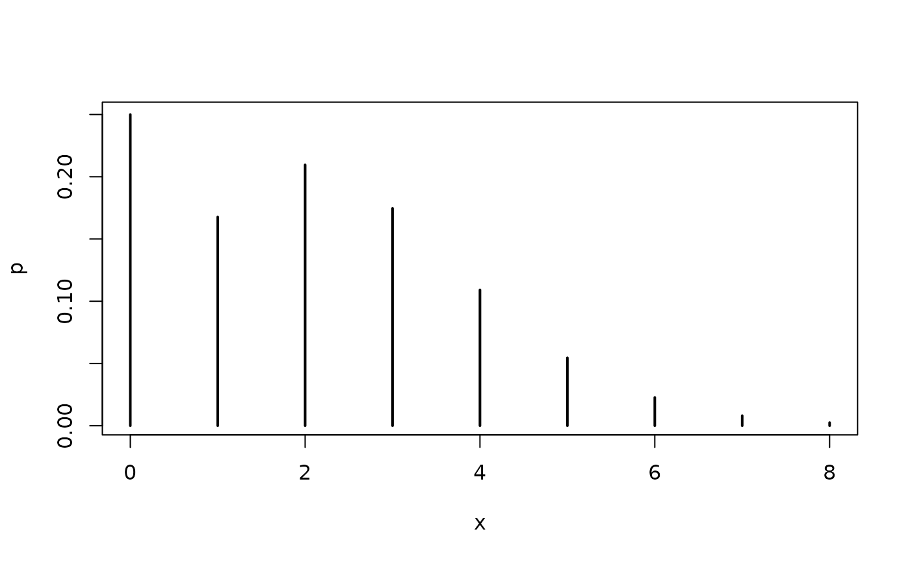
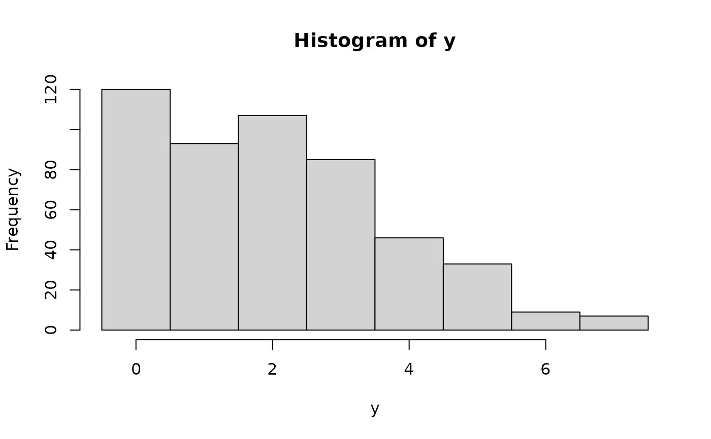

Density, distribution function, quantile function, and random
generation for the zero-hurdle Poisson distribution with
parameters lambda and pi.
Usage
dhpois(x, lambda, pi, log = FALSE)
phpois(q, lambda, pi, lower.tail = TRUE, log.p = FALSE)
qhpois(p, lambda, pi, lower.tail = TRUE, log.p = FALSE)
rhpois(n, lambda, pi)Arguments
- x
vector of (non-negative integer) quantiles.
- lambda
vector of (non-negative) Poisson parameters.
- pi
vector of zero-hurdle probabilities in the unit interval.
- log, log.p
logical indicating whether probabilities p are given as log(p).
- q
vector of quantiles.
- lower.tail
logical indicating whether probabilities are \(P[X \le x]\) (lower tail) or \(P[X > x]\) (upper tail).
- p
vector of probabilities.
- n
number of random values to return.
Details
All functions follow the usual conventions of d/p/q/r functions
in base R. In particular, all four hpois functions for the
hurdle Poisson distribution call the corresponding pois
functions for the Poisson distribution frame base R internally.
Note, however, that the precision of qhpois for very large
probabilities (close to 1) is limited because the probabilities
are internally handled in levels and not in logs (even if log.p = TRUE).
Examples
## theoretical probabilities for a hurdle Poisson distribution
x <- 0:8
p <- dhpois(x, lambda = 2.5, pi = 0.75)
plot(x, p, type = "h", lwd = 2)

## corresponding empirical frequencies from a simulated sample
set.seed(0)
y <- rhpois(500, lambda = 2.5, pi = 0.75)
hist(y, breaks = -1:max(y) + 0.5)
